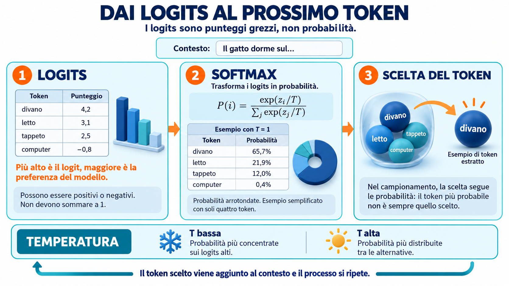
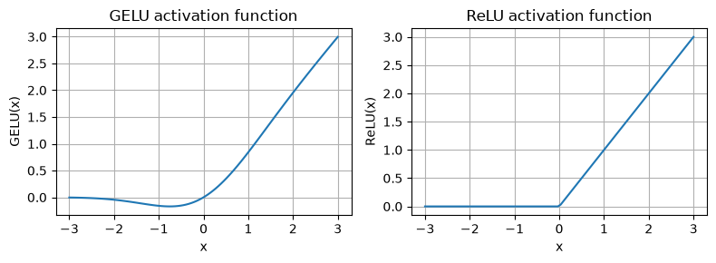
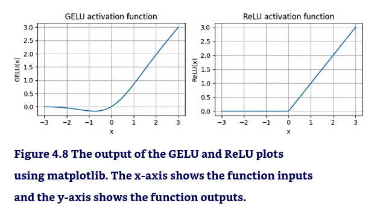
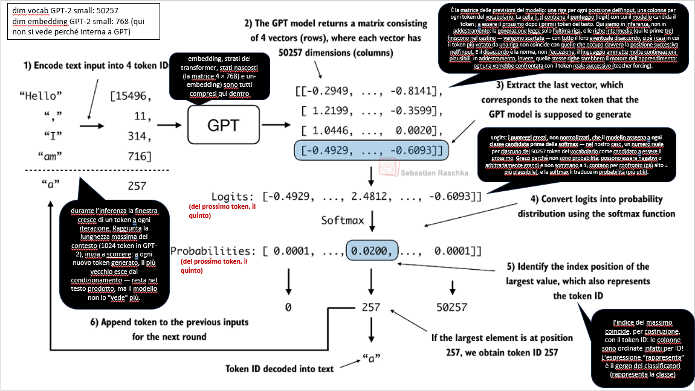

import os
os.environ["KMP_DUPLICATE_LIB_OK"] = "TRUE"L’architettura di un modello GPT per la generazione di testo
> Copyright Antonio Piemontese 2026 (inspired to Sebastian Raschka’s work).
Questo capitolo tratta: * la codifica di un modello linguistico di grandi dimensioni (LLM) simile a GPT (GPT-like) che possa essere allenato per generare testo simile a quello umano * la definizione dei vari layer (con le loro dimensioni, le loro tipologie e le loro funzioni di attivazione) * la normalizzazione delle attivazioni dei livelli (layer activations) per stabilizzare l’allenamento delle reti neurali * l’aggiunta di connessioni rapide (shortcut connections) nelle reti neurali profonde * l’implementazione di blocchi transformer (transformer block), cioè blocchi di molti layer specific, per creare modelli GPT di varie dimensioni * il calcolo del numero dei parametri e dei requisiti di memoria dei modelli GPT.
🧩 Gli “innesti gpt-oss” (convenzione introdotta nel notebook 2)
Nell’agosto 2025 OpenAI ha rilasciato gpt-oss-120b e gpt-oss-20b, i suoi primi modelli open-weight (cioè “a pesi aperti”: i pesi sono liberamente scaricabili e utilizzabili, con licenza Apache 2.0) dopo GPT-2.
Le celle come questa — su sfondo azzurro e contrassegnate dal simbolo 🧩 — sono innesti gpt-oss: nei punti di contatto con il programma del corso, anticipano come cambia in gpt-oss il concetto appena studiato su GPT-2. Sono letture a margine: il filo del corso resta GPT-2, e il confronto completo sarà sviluppato nel modulo dedicato a gpt-oss (notebook 8).
Questo è il capitolo in cui le due architetture divergono di più: gli innesti culminano nel Mixture-of-Experts, la novità più profonda di gpt-oss.
Legenda delle icone (standard) usate nel notebook:
👉 punto di attenzione, il “succo”
📌 nota / inizio di una nota
📦 punto elenco importante
📊 dati/numeri
🔹 punto elenco normale
⭐ punto elenco importante
✅ punto risolto, positivo
❌ punto negativo, da evitare
⚠️ attenzione, warning, allarme
💡 idea chiave
🧠 idea intuitiva
📝 sintesi / bottom-line
⟶ conseguenza, effetto, passo successivo
Attenzione: se NON si esegue questa cella seguente la prima chiamata di matplotlib bloccheràdi colpo il kernel. Vedi spiegazione in testa al notebook.
Abbiamo già imparato e implementato (nel notebook 3) il meccanismo di attenzione multi-head (multi-head attention mechanism), uno dei componenti principali degli LLM.
Ora, implementeremo gli altri elementi costitutivi di un LLM e li assembleremo in un modello simile a GPT che poi alleneremo nel prossimo notebook, per generare testo di tipo umano.
La seguente figura il processo COMPLETO per la costruzione di LLM personalizzati, usato in questo corso, che è composto da diversi elementi costitutivi. Inizieremo con una panoramica dall’alto dell’architettura del modello, per poi esaminare più dettagliatamente i singoli componenti.

La figura illustra i tre passi principali (step) dell’implementazione (coding) di un LLM. Questo notebook si focalizza sul passo 3 dello stage 1: l’implementazione di un’architettura LLM.
Implementare un’architettura LLM
Gli LLM come GPT (Generative Pretrained Transformer) o Llama sono grandi architetture di reti neurali profonde 1, progettate per generare nuovo testo, una parola (o token) alla volta, e si basano sulla parte decoder dell’architettura originale del trasformatore. Per questo motivo, questi LLM sono spesso definiti LLM “decoder-like”.
1 Una rete è “profonda” (deep) quanto ha molti layer, anche se ognuno di essi non ha molti neuroni. Al contrario una rete neurale si dice “ampia” (wide) quando ha pochi layer composti ognuno di molti neuroni. Sebbene le reti neurali ampie siano in grado di approssimare qualsiasi funzione f, le reti neurali profonde si è visto empiricamente che sono più veloci a convergere.
Tuttavia, nonostante le loro dimensioni, l’architettura del modello è meno complessa di quanto si possa pensare, poiché molti dei suoi componenti sono ripetuti, come vedremo più avanti.
Rispetto ai modelli di deep learning convenzionali, gli LLM sono più grandi, principalmente a causa del loro enorme numero di parametri, non della quantità di codice.
La seguente figura fornisce una vista di alto livello di un LLM di tipo GPT, con i suoi componenti principali evidenziati.

La figura descrive un modello GPT. Oltre agli strati di embedding, esso è costituito da uno o più blocchi transformer contenenti il modulo di attenzione multi-head mascherato che abbiamo precedentemente implementato (nel notebook 3).
Nei notebook precedenti abbiamo già trattato diversi aspetti dell’architettura LLM, come la tokenizzazione e l’embedding (incorporamento) dell’input e il modulo di attenzione multi-head mascherato.
In questo notebook implementeremo: > la struttura principale del modello GPT, costituita dai suoi blocchi di trasformazione (transformer blocks), che in seguito alleneremo per generare testo di tipo umano.
In precedenza (nel notebook 3), abbiamo utilizzato dimensioni di embedding ridotte, per semplicità, in modo che esempi e codice stessero in una pagina/cella.
Ora scaleremo fino alle dimensioni di un piccolo modello GPT-2, in particolare la versione più piccola con 124 milioni di parametri, come descritto in “Language Models Are Unsupervised Multitask Learners”, di Radford et al. (https://mng.bz/yoBq).
[Si noti che, sebbene il rapporto originale menzionasse 117 milioni di parametri, questo dato è stato successivamente corretto].
Nel notebook 6, ci concentreremo sul caricamento nella nostra implementazione dei pesi pre-addestrati e sul suo adattamento a modelli GPT-2 più grandi con 345, 762 e 1.542 milioni di parametri.
Nel contesto del deep learning e dei LLM come GPT, il termine “parametri” si riferisce ai pesi allenabili (trainable parameters) del modello.
Questi pesi sono essenzialmente le variabili interne del modello, che sono regolate e ottimizzate durante il processo di allenamento per minimizzare una specifica funzione di perdita (loss function). Una buona metafora è la regolazione di un sistema di produzione di audio (composto da molte apparecchiature: mixer, casse, microfoni, ecc) tramite le varie manopole. > L’ottimizzazione del modello consente al modello di apprendere (learn!) dai dati di allenamento (training data).
Ad esempio, in un livello di rete neurale rappresentato da una matrice di pesi (weight matrix) 2.048 × 2.048, ogni elemento di questa matrice è un parametro. Poiché ci sono 2.048 righe e 2.048 colonne, il numero totale di parametri in questo livello è 2.048 moltiplicato per 2.048, che equivale a 4.194.304 parametri.
GPT-2 vs. GPT-3
In questo corso usiamo GPT-2 perché OpenAI ha reso pubblici i pesi del modello pre-allenato, che caricheremo nella nostra implementazione nel notebook 5, come detto. GPT-3 è fondamentalmente lo stesso in termini di architettura del modello, tranne per il fatto che è scalato dai 1,5 miliardi di parametri GPT-2 ai 175 miliardi di parametri di GPT-3, ed è allenato su più dati. Al momento, i pesi di GPT-3 non sono disponibili al pubblico.
GPT-2 è anche una scelta migliore per imparare a implementare LLM, in quanto può essere eseguito su un singolo computer portatile, mentre GPT-3 richiede un cluster GPU per l’allenamento e l’inferenza. Secondo i Lambda Labs (https://lambdalabs.com/), ci vorrebbero 355 anni per addestrare GPT-3 su una singola GPU V100 per datacenter e 665 anni su una GPU RTX 8000 consumer.
Qui sotto specifichiamo la configurazione del nostro (iniziale) modello GPT-2 di piccole dimensioni, tramite il seguente dizionario Python, che utilizzeremo negli esempi di codice più avanti:
GPT_CONFIG_124M = {
"vocab_size": 50257, # dimensione del vocabolario (tiktoken)
"context_length": 1024, # context length (lalunghezza della memoria, esaurita la quale si va in override)
"emb_dim": 768, # dimensione dell'embedding (vedi notebook 2)
"n_heads": 12, # numero degli attention heads (vedi notebook 3)
"n_layers": 12, # numero dei blocchi di trasformazione
"drop_rate": 0.1, # tasso di dropout (dropout rate)
"qkv_bias": False # bias Query-Key-Value
}In questo dizionario GPT_CONFIG_124M, utilizziamo nomi di variabili concisi per chiarezza e per evitare lunghe righe di codice:
vocab_sizesi riferisce a un vocabolario di 50.257 parole, come quello utilizzato dal tokenizzatore BPE (vedi il notebook 2)context_lengthindica il numero massimo di token di input che il modello può gestire tramite gli embedding posizionali (vedi il notebook 2)emb_dimrappresenta la dimensione dell’embedding, trasformando ogni token in un vettore a 768 dimensionin_headsindica il numero delle attention heads nel meccanismo di attenzione multi-head (vedi il notebook 3)n_layersspecifica il numero di blocchi di trasformazione nel modello, che tratteremo tra pocodrop_rateindica l’intensità del meccanismo di dropout (0.1 implica un dropout casuale del 10% di nodi nascosti), allo scopo di evitare l’overfitting (vedi il notebook 3)qkv_biasè un flag binario che stabilisce se includere un vettore di bias nei livelli lineari dell’attenzione multi-head per i calcoli di query, chiavi e valori. Inizialmente lo disattiveremo, seguendo la consuetudine dei moderni LLM, ma ci ritorneremo sopra nel notebook 6 quando caricheremo nel nostro modello i pesi di GPT-2 pre-allenati da OpenAI (vedi il notebook 6)
🧩 E in gpt-oss? — Lo stesso “dizionario mentale”, numeri molto diversi
L’idea di raccogliere l’architettura in un dizionario di configurazione vale identica per gpt-oss; cambiano i valori, e compaiono chiavi nuove. Il confronto (le prime due chiavi le abbiamo già incontrate negli innesti del notebook 2):
L’idea di raccogliere l’architettura in un dizionario di configurazione vale identica per gpt-oss; cambiano i valori, e compaiono chiavi nuove. Il confronto (le prime due chiavi le abbiamo già incontrate negli innesti del notebook 2):
| chiave | GPT-2 124M (il nostro) | gpt-oss-20b | gpt-oss-120b |
|---|---|---|---|
vocab_size
|
50.257 | 201.088 | 201.088 |
context_length
|
1.024 | 131.072 | 131.072 |
emb_dim
|
768 | 2.880 | 2.880 |
n_heads
|
12 | 64 query + 8 K/V | 64 query + 8 K/V |
n_layers
|
12 | 24 | 36 |
drop_rate
|
0.1 | — (niente dropout) | — (niente dropout) |
qkv_bias
|
False
|
True
|
True
|
| esperti MoE (nuova) | — | 32, top-4 | 128, top-4 |
Le altre novità (RoPE, finestra scorrevole, attention sinks) non compaiono qui perché non sono numeri del dizionario ma componenti: le ritroveremo negli innesti di questo capitolo, al posto giusto. “MoE” e “top-4” sono spiegati nell’innesto della sezione sulla rete feedforward.
La seguente figura ci dà una visione d’insieme dei 7 passi di questo notebook: le componenti che dobbiamo implementare (codificare) per assemblare l’architettura completa del modello GPT, e di come queste componenti si integrano.

Come detto, la figura, nei vari riquadri numerati, illustra l’ordine didattico col quale implementeremo l’architettura GPT in questo notebook. Inizieremo (al passo 1) con il backbone (scheletro) del GPT, un’architettura segnaposto (placeholder) che chiameremo DummyGPTModel, per poi arrivare ai singoli componenti principali (passi 2-5) e infine assemblarli in un blocco trasformatore (passo 6) che produrrà la architettura GPT finale (passo 7).
# check delle versioni correnti dei package utilizzati in questo notebook
# %pip install tiktoken
import tiktoken
from importlib.metadata import version
print("versione di matplotlib: ", version("matplotlib"))
print("versione di torch: ", version("torch"))
print("versione di tiktoken: ", version("tiktoken"))versione di matplotlib: 3.11.2
versione di torch: 2.14.1+cu130
versione di tiktoken: 0.14.0Passo 1
La seguente classe implementa la architettura GPT placeholder (backbone):
import torch
import torch.nn as nn
# i LAYER architetturali del modello GPT sono definiti in questa classe DummyGPTModel, che funge da placeholder per il modello GPT vero e proprio
class DummyGPTModel(nn.Module):
def __init__(self, cfg):
super().__init__()
self.tok_emb = nn.Embedding(cfg["vocab_size"], cfg["emb_dim"])
self.pos_emb = nn.Embedding(cfg["context_length"], cfg["emb_dim"])
self.drop_emb = nn.Dropout(cfg["drop_rate"])
# usa un placeholder per il TransformerBlock
self.trf_blocks = nn.Sequential(
*[DummyTransformerBlock(cfg) for _ in range(cfg["n_layers"])])
# usa un placeholder per LayerNorm
self.final_norm = DummyLayerNorm(cfg["emb_dim"])
self.out_head = nn.Linear(
cfg["emb_dim"], cfg["vocab_size"], bias=False
)
# il forward è il PROCESSO di attraversamento in avanti (da sx a dx) una volta di tutti i layer del modello, a partire dall'input (in_idx) fino all'output (logits)
def forward(self, in_idx):
batch_size, seq_len = in_idx.shape
tok_embeds = self.tok_emb(in_idx)
pos_embeds = self.pos_emb(torch.arange(seq_len, device=in_idx.device))
x = tok_embeds + pos_embeds
x = self.drop_emb(x)
x = self.trf_blocks(x)
x = self.final_norm(x)
logits = self.out_head(x)
return logits
class DummyTransformerBlock(nn.Module):
# una semplice classe placeholder che sarà sostituita più avanti da un TransformerBlock reale
def __init__(self, cfg):
super().__init__()
def forward(self, x):
# questo metodo non fa nulla e semplicemente restituisce il suo input
return x
class DummyLayerNorm(nn.Module):
# una semplice classe placeholder che sarà sostituita più avanti da un LayerNorm reale (effettivo)
def __init__(self, normalized_shape, eps=1e-5): # questi parametri servono solo a simulare l'interfaccia LayerNorm
super().__init__()
def forward(self, x):
# questo metodo non fa nulla e semplicemente restituisce il suo input
return xLa classe DummyGPTModel della cella precedente rappresenta una versione semplificata di un modello GPT-like che utilizza il modulo di rete neurale di PyTorch (nn.Module). L’architettura di questa classe è composta da * embedding dei token * embedding posizionali * dropout * una serie di blocchi transformer (DummyTransformerBlock) * una normalizzazione del livello finale (DummyLayerNorm) * e un livello di output lineare (out_head)
Questa configurazione è “passata in avanti” (passed in) tramite un dizionario Python, ad esempio il dizionario GPT_CONFIG_124M creato in precedenza.
Il metodo forward descrive il flusso di dati attraverso il modello: calcola gli embedding dei token e posizionali per gli indici di input, applica il dropout, elabora i dati attraverso i blocchi transformer, applica la normalizzazione e infine produce i logit (le previsioni) con il livello di output lineare.
Il codice sopra listato è già funzionante (nel senso che la definizione delle classi/metodi funziona, non dà errore). Tuttavia, per ora, stiamo utilizzando dei segnaposto (DummyLayerNorm e DummyTransformerBlock) per la normalizzazione dei livelli e per il blocco trasformatore. Svilupperemo in seguito queste componenti. Successivamente, prepareremo i dati di input e inizializzeremo un nuovo modello GPT per illustrarne l’utilizzo.
Vediamo ora una panoramica di alto livello di come i dati fluiscono dentro e fuori da un modello GPT, usando la codifica del tokenizzatore BPE (vedi il notebook 2).

La figura costituisce una panoramica generale di come i dati di input vengono tokenizzati, incorporati (embedded) e inviati al modello GPT. Si noti che nella classe DummyGPTClass prima codificata, l’embedding del token è gestito all’interno del modello GPT. Negli LLM, la dimensione del token di input embedded corrisponde in genere alla dimensione di output. Gli embedding di output qui rappresentano i vettori di contesto (vedere il notebook 3).
Per implementare questi passi, tokenizziamo un batch di 2 input testuali al modello GPT, usando il tokenizzatore tiktoken visto nel notebook 2.
# pip install tiktoken
import tiktoken
tokenizer = tiktoken.get_encoding("gpt2") # l'istanziazione del tokenizer
batch = [] # l'inizializzazione dell'output
txt1 = "Every effort moves you" # il primo input testuale
txt2 = "Every day holds a" # il secondo input tesuale (della stessa lunghezza, per semplicità)
batch.append(torch.tensor(tokenizer.encode(txt1))) # il primo encode
batch.append(torch.tensor(tokenizer.encode(txt2))) # il secondo encode
batch = torch.stack(batch, dim=0) # l'impilamento
print(batch)tensor([[6109, 3626, 6100, 345],
[6109, 1110, 6622, 257]])La prima riga corrisponde al primo testo, la seconda riga corrisponde al secondo testo.
Poi, inizializziamo una nuova istanza di DummyGPTModel con 124 millioni di parametri ed alimentiamola con il batch prima tokenizzato:
torch.manual_seed(123)
model = DummyGPTModel(GPT_CONFIG_124M) # l'istanziazione con la configurazione che abbiamo definito prima
logits = model(batch) # l'inferenza --> produce le previsioni (logits)Gli output del modello, in genere chiamati logits (vedi la seguente infografica):

sono i seguenti (se il sistema operativo è Windows o Linux):
print("output shape:", logits.shape)
print(logits)output shape: torch.Size([2, 4, 50257])
tensor([[[-1.2034, 0.3201, -0.7130, ..., -1.5548, -0.2390, -0.4667],
[-0.1192, 0.4539, -0.4432, ..., 0.2392, 1.3469, 1.2430],
[ 0.5307, 1.6720, -0.4695, ..., 1.1966, 0.0111, 0.5835],
[ 0.0139, 1.6755, -0.3388, ..., 1.1586, -0.0435, -1.0400]],
[[-1.0908, 0.1798, -0.9484, ..., -1.6047, 0.2439, -0.4530],
[-0.7860, 0.5581, -0.0610, ..., 0.4835, -0.0077, 1.6621],
[ 0.3567, 1.2698, -0.6398, ..., -0.0162, -0.1296, 0.3717],
[-0.2407, -0.7349, -0.5102, ..., 2.0057, -0.3694, 0.1814]]],
grad_fn=<UnsafeViewBackward0>)Il tensore di output 3D ha due righe (come prima dimensione) corrispondenti alle due frasi in input.
Ogni frase di testo è costituita da quattro token; ogni token è un vettore di 50.257 dimensioni Poichè si usa la codifica one hot encoding, che corrisponde alla dimensione del vocabolario del tokenizzatore scelto (BPE).
Il vettore 50.257 elementi perché è la dimensione del vocabolario (scelta di OpenAI per GPT-2).
Quando implementeremo il codice di post-processing, convertiremo questi vettori di 50.257 dimensioni in ID di token embedding, che potremo quindi decodificare in parole.
Nota sul sistema operativo: * le inconsistenze tra OS non sono preoccupanti, poiché si tratta solo di numeri casuali. Una possibile ragione di questa discrepanza è il diverso comportamento di nn.Dropout nei sistemi operativi, a seconda di come è stato compilato PyTorch, come discusso qui.
Ora che abbiamo esaminato l’architettura di GPT in modo top-down e i suoi input e output, possiamo codificare i singoli segnaposto, iniziando dalla classe effettiva (reale) per la normalizzazione del livello, che sostituirà il segnaposto DummyLayerNorm nel codice precedente.
Normalizzare le attivazioni con la normalizzazione dei layer
L’allenamento di reti neurali profonde con molti livelli può talvolta rivelarsi impegnativo a causa di problemi come gradienti che svaniscono o esplodono.
Questi problemi rendono l’allenamento instabile e rendono difficile per la rete “aggiustare” efficacemente i propri pesi, il che significa che il processo di apprendimento fatica a trovare un insieme di parametri (pesi) per la rete neurale che minimizzi la funzione di perdita (loss function).
In altre parole, la rete ha difficoltà ad apprendere i pattern sottostanti ai dati che le consentano di formulare previsioni o decisioni accurate.
Implementiamo ora la normalizzazione dei layer (layer normalization), anche detta LayerNorm (Ba et al. 2016), PROPRIO per migliorare la stabilità e l’efficienza dell’allenamento delle reti neurali.
L’idea principale alla base della normalizzazione dei layer è quella di aggiustare le attivazioni (output) di un layer di rete neurale in modo che abbiano una media pari a 0 e una varianza pari a 1, nota anche come varianza unitaria.
Questa regolazione accelera la convergenza verso pesi efficaci e garantisce un allenamento coerente e affidabile.
In GPT-2 e nelle moderne architetture a trasformatore, la normalizzazione dei layer viene in genere applicata prima e dopo il modulo di attenzione multi-head e, come abbiamo visto con il segnaposto DummyLayerNorm, prima del layer di output finale.
La seguente figura fornisce una panoramica visiva del funzionamento della normalizzazione dei layer.

La figura illustra, dal basso all’alto, una normalizzazione del layer in cui i sei output del layer, chiamati anche attivazioni, sono normalizzati in modo da avere media pari a 0 e varianza pari a 1.
Codifichiamo in PyTorch l’esempio della figura precedente: un layer di rete neurale con 5 input e 6 output, che applichiamo a due esempi di training:
torch.manual_seed(123)
# crea 2 esempi training con 5 dimensioni (features) l'uno
batch_example = torch.randn(2, 5) # generazione casuale
layer = nn.Sequential(nn.Linear(5, 6), nn.ReLU())
out = layer(batch_example)
print(out)tensor([[0.2260, 0.3470, 0.0000, 0.2216, 0.0000, 0.0000],
[0.2133, 0.2394, 0.0000, 0.5198, 0.3297, 0.0000]],
grad_fn=<ReluBackward0>)La PRIMA riga del tensore lista gli output del layer per il PRIMO input (quelli mostrati nella figura), la SECONDA riga del tensore lista gli output del layer per il secondo input.
[Il TRUCCO è che la figura è stata generata dopo, non prima!]
Tra poco spiegheremo perchè tutti gli elementi del tensore sono non negativi.
Il layer di rete neurale che abbiamo codificato è costituito da un layer Linear seguito da una funzione di attivazione non lineare, la ReLU (abbreviazione di “rectified linear unit”), che è una funzione di attivazione standard nelle reti neurali.
Essa semplicemente imposta la soglia degli input negativi a 0, assicurando che un layer restituisca in output solo valori positivi, il che spiega perché l’output del layer non contenga valori negativi.
Più avanti, utilizzeremo in GPT un’altra funzione di attivazione più sofisticata.
Prima di applicare la normalizzazione del layer a questi output, esaminiamo la media e la varianza per ognuno dei due input di prima:
mean = out.mean(dim=-1, keepdim=True)
var = out.var(dim=-1, keepdim=True)
print("Media:\n", mean)
print("Varianza:\n", var)Media:
tensor([[0.1324],
[0.2170]], grad_fn=<MeanBackward1>)
Varianza:
tensor([[0.0231],
[0.0398]], grad_fn=<VarBackward0>)La normalizzazione viene applicata a ciascuno dei due input (righe) in modo indipendente.
La prima riga del tensore della media contiene il valore medio della prima riga di input, mentre la seconda riga di output contiene il valore medio della seconda riga di input.
L’utilizzo di keepdim=True in operazioni come il calcolo della media o della varianza garantisce che il tensore di output mantenga lo stesso numero di dimensioni del tensore di input, anche se l’operazione riduce il tensore lungo la dimensione specificata da dim.
Ad esempio, senza keepdim=True, il tensore delle media restituito sarebbe un vettore [0,1324, 0,2170] invece di una matrice 2 × 1 [[0,1324], [0,2170]]. Il parametro dim specifica la dimensione lungo la quale deve essere eseguito il calcolo della statistica (in questo caso, media o varianza) in un tensore.
Come spiegato nella figura successiva, per un tensore bidimensionale (come una matrice), utilizzare dim=-1 per operazioni come il calcolo della media o della varianza equivale a utilizzare dim=1. Questo perché -1 si riferisce all’ultima dimensione del tensore, che corrisponde alle colonne di un tensore bidimensionale.
Successivamente, quando aggiungeremo la normalizzazione dei layer al modello GPT, che produce tensori tridimensionali con la forma [batch_size, num_tokens, embedding_size], potremo ancora usare
dim=-1per la normalizzazione sull’ultima dimensione, evitando di passare dadim=1adim=2.

La figura precedente illustra il funzionamento del parametro dim nel calcolo della media di un tensore. Ad esempio, se abbiamo un tensore bidimensionale (matrice) con dimensioni [righe, colonne], usando dim=0 si eseguirà l’operazione su tutte le righe (verticalmente, come mostrato in basso), ottenendo un output che aggrega i dati per ogni colonna. Usando invece dim=1 o dim=-1 si eseguirà l’operazione su tutte le colonne (orizzontalmente, come mostrato in alto), ottenendo un output che aggrega i dati per ogni riga.
Applichiamo ora la normalizzazione dei layer agli output ottenuti in precedenza. L’operazione consiste nel sottrarre la media e dividerla per la radice quadrata della varianza (nota anche come deviazione standard). In questo modo centriamo i dati intorno a 0 (come media) e standardizziamo la deviazione standard (che misura la variabilità insita nei dati). Loperazione, molto frequente in statistica e nel Machine/Deep Learning, è anche detta standardizzazione:
out_norm = (out - mean) / torch.sqrt(var)
print("Output della layer normalization:\n", out_norm)
mean = out_norm.mean(dim=-1, keepdim=True)
var = out_norm.var(dim=-1, keepdim=True)
print("Media:\n", mean)
print("Varianza:\n", var)Output della layer normalization:
tensor([[ 0.6159, 1.4126, -0.8719, 0.5872, -0.8719, -0.8719],
[-0.0189, 0.1121, -1.0876, 1.5173, 0.5647, -1.0876]],
grad_fn=<DivBackward0>)
Media:
tensor([[9.9341e-09],
[0.0000e+00]], grad_fn=<MeanBackward1>)
Varianza:
tensor([[1.0000],
[1.0000]], grad_fn=<VarBackward0>)Ora ogni output è centrato su 0 e ha deviazione standard 1.
Si noti che, ad esempio, un valore –5,9605e-08 nel tensore di output è la notazione scientifica per –5,9605 × 10-8, che è –0,000000059605 in forma decimale. Questo valore è molto vicino a 0, ma non è esattamente 0 a causa di piccoli errori numerici che possono accumularsi a causa della precisione finita con cui i computer rappresentano i numeri.
Per migliorare la leggibilità possiamo anche disabilitare la notazione scientifica di PyTorch:
torch.set_printoptions(sci_mode=False)
print("Media:\n", mean)
print("Varianza:\n", var)Media:
tensor([[0.0000],
[0.0000]], grad_fn=<MeanBackward1>)
Varianza:
tensor([[1.0000],
[1.0000]], grad_fn=<VarBackward0>)Finora abbiamo applicato la normalizzazione dei layer passo dopo passo. Ora incapsuliamo questo processo in una classe PyTorch di nome LayerNormche potremo utilizzare in seguito nel modello GPT.
# la classe (formale, ben definita) che poi inseriremo nel modello GPT per la normalizzazione dei layer
class LayerNorm(nn.Module):
def __init__(self, emb_dim):
super().__init__()
self.eps = 1e-5
self.scale = nn.Parameter(torch.ones(emb_dim))
self.shift = nn.Parameter(torch.zeros(emb_dim))
def forward(self, x):
mean = x.mean(dim=-1, keepdim=True)
var = x.var(dim=-1, keepdim=True, unbiased=False)
norm_x = (x - mean) / torch.sqrt(var + self.eps)
return self.scale * norm_x + self.shiftLa classe opera sull’ultima dimensione del tensore di input x, che rappresenta la dimensione di embedding (emb_dim).
La variabile eps è una piccola costante (epsilon) aggiunta alla varianza per evitare la divisione per zero durante la normalizzazione (impossibile per definizione).
La scale e lo shift (spostamento) sono due parametri allenabili (della stessa dimensione dell’input), il primo da moltiplicare ed il secondo da aggiungere. I loro valori iniziali (1 per la scala e 0 per lo spostamento) non hanno alcun effetto; tuttavia, appunto, la scale e lo shift (spostamento) sono due parametri allenabili che il LLM aggiusta automaticamente durante l’allenamento se ciò migliora le prestazioni del modello.
Ciò consente al modello di apprendere (learn) la scala e lo spostamento più appropriati, cioè che meglio si adattano ai dati che sta elaborando.
Nota matematica sulla varianza distorta (biased = distorta)
Abbiamo impostato ubiased = “Falso”. Cosa significa? Nel calcolo della varianza, dividiamo per il numero di input \(n\) nella formula della varianza. Questo approccio non applica la correzione di Bessel, che in genere utilizza \(n–1\) invece di \(n\) al denominatore per correggere la distorsione nella stima della varianza campionaria. Questa decisione si traduce in una cosiddetta stima distorta della varianza. Per gli LLM, in cui la dimensione di embedding \(n\) è significativamente grande, la differenza tra l’utilizzo di \(n\) e \(n–1\) è praticamente trascurabile. Si è scelto ubiased = “Falso”per garantire la compatibilità con i normalization layer del modello GPT-2 e perché riflette il comportamento predefinito di TensorFlow, utilizzato per implementare il modello GPT-2 originale. Con questa impostazione , garantiamo che la classe sia compatibile con i pesi pre-allenati che caricheremo nel notebook 6.
🧩 E in gpt-oss? — Dalla LayerNorm alla RMSNorm
gpt-oss — come quasi tutti gli LLM recenti — sostituisce la LayerNorm con la RMSNorm (Root Mean Square Normalization, “normalizzazione a radice della media dei quadrati”): si salta del tutto la sottrazione della media e si divide semplicemente per RMS(x) = √( media(x²) + ε ); resta un solo parametro appreso di scala (il nostro scale), sparisce il parametro di shift.
Perché: metà dei conti (niente media, niente varianza centrata), un parametro in meno, e in pratica funziona altrettanto bene. Nota a margine: la questione della correzione di Bessel appena discussa lì semplicemente svanisce — non c’è più una varianza da stimare.
La nostra classe LayerNorm diventa una RMSNorm togliendo un paio di righe: lo faremo nel modulo dedicato a gpt-oss.
Proviamo ora la classe LayerNorm applicandola all’input batch:
ln = LayerNorm(emb_dim=5)
out_ln = ln(batch_example)mean = out_ln.mean(dim=-1, keepdim=True)
var = out_ln.var(dim=-1, unbiased=False, keepdim=True)
print("Media:\n", mean)
print("Varianza:\n", var)Media:
tensor([[-0.0000],
[ 0.0000]], grad_fn=<MeanBackward1>)
Varianza:
tensor([[1.0000],
[1.0000]], grad_fn=<VarBackward0>)La layer normalization funziona come previsto e normalizza (standardizza) i valori di ciascuno dei due input in modo che abbiano media pari a 0 e varianza pari a 1.
Ricapitolando, abbiamo trattato due degli elementi costitutivi di un’architettura GPT, come mostrato nella figura seguente:

Implementare una rete feedforward con attivazione GELU
Ora implementiamo una classe per piccole reti neurali (che chiameremo FeedForward) che, negli LLM, fa parte del transformer block.
Iniziamo implementando la funzione di attivazione GELU, che è una delle funzioni di attivazione utilizzate negli LLM, al posto della tradizionale funzione ReLU che usavamo in precedenza. La GELU gioca un ruolo cruciale nella classe FeedForward.
Nota sulle funzioni di attivazione per gli LLM
Storicamente, la funzione di attivazione ReLU è stata comunemente utilizzata nel deep learning, grazie alla sua semplicità ed efficacia, in diverse architetture di reti neurali.
Tuttavia, nei LLM, vengono impiegate diverse altre funzioni di attivazione oltre alla tradizionale ReLU.
Due esempi degni di nota sono GELU (Gaussian Error Linear Unit) e SwiGLU (Swish-gated Linear Unit).
GELU e SwiGLU sono funzioni di attivazione più complesse e fluide (smooth), che includono rispettivamente unità lineari gaussiane e sigmoidee.
GELU e SwiGLU offrono prestazioni migliori per i modelli di deep learning, a differenza della più semplice ReLU.
La funzione di attivazione GELU può essere implementata in diversi modi; la versione esatta è definita così:
GELU(x) = x⋅𝛷(x)
dove 𝛷(x) è la funzione di distribuzione cumulativa della distribuzione gaussiana standard.
In pratica, tuttavia, è comune implementare un’approssimazione computazionalmente più economica (anche il modello GPT-2 originale è stato allenato con questa approssimazione, ottenuta tramite curve fitting): \[ \text{GELU}(x) \approx 0.5 \cdot x \cdot \left(1 + \tanh\left[\sqrt{\frac{2}{\pi}} \cdot \left(x + 0.044715 \cdot x^3\right)\right]\right) \]
In PyTorch implementiamo la GELU in questo modo (–> manda il kernel in crask):
class GELU(nn.Module):
def __init__(self):
super().__init__()
def forward(self, x):
return 0.5 * x * (1 + torch.tanh(
torch.sqrt(torch.tensor(2.0 / torch.pi)) *
(x + 0.044715 * torch.pow(x, 3))
))Per avere un’idea del comportamento della GELU, anche confrontato con quello della ReLU, plottiamole fianco a fianco.
NOTA BENE: in VS Code o Jupyter Notebook la seguente cella CHIUDE il kernel!! - NON ESEGUIRE: è fornito l’output png.
In Google Colab, la cella funziona.
import matplotlib.pyplot as plt
gelu, relu = GELU(), nn.ReLU()
# crea 100 punti campione nel range [-3,3]
x = torch.linspace(-3, 3, 100)
y_gelu, y_relu = gelu(x), relu(x)
plt.figure(figsize=(8, 3))
for i, (y, label) in enumerate(zip([y_gelu, y_relu], ["GELU", "ReLU"]), 1):
plt.subplot(1, 2, i)
plt.plot(x, y)
plt.title(f"{label} activation function")
plt.xlabel("x")
plt.ylabel(f"{label}(x)")
plt.grid(True)
plt.tight_layout()
plt.show()

Come si vede, ReLU (a destra) è una funzione lineare a tratti (piecewise linear function) che restituisce l’input se è positivo; altrimenti, restituisce zero. GELU (a sinistra) è una funzione liscia e non lineare (smooth, non-linear function) che approssima la ReLU ma con una derivata diversa da zero per quasi tutti i valori negativi (tranne per circa x = –0,75).
La fluidità (smoothness) di GELU può migliorare l’ottimizzazione durante l’allenamento, poiché consente aggiustamenti più sfumati (nuanced) ai parametri del modello.
Al contrario, ReLU ha un angolo acuto in corrispondenza dello zero (e quindi non derivabile), che a volte può rendere l’ottimizzazione più difficile, soprattutto in reti molto profonde o con architetture complesse.
Inoltre, a differenza di ReLU, che restituisce zero per qualsiasi input negativo, GELU restituisce un output piccolo, diverso da zero, per valori negativi. Ciò comporta che, durante l’allenamento, i neuroni che ricevono input negativi possono comunque contribuire al processo di apprendimento, sebbene in misura minore rispetto agli input positivi.
🧩 E in gpt-oss? — Da GELU a SwiGLU, l’attivazione “con cancello”
gpt-oss non usa la GELU ma la SwiGLU, una attivazione gated (“con cancello”). L’idea: l’input attraversa due proiezioni lineari parallele; una passa per la SiLU (detta anche Swish: SiLU(x) = x · sigmoid(x), una curva liscia molto simile alla GELU appena tracciata) e fa da cancello, moltiplicando elemento per elemento l’altra:
FFN(x) = W3 · ( SiLU(W1x) ⊙ W2x ) (⊙ = prodotto elemento per elemento)
quindi tre matrici di pesi invece di due. Il cancello dà alla rete un controllo moltiplicativo su che cosa lasciar passare, ed empiricamente allena meglio. gpt-oss ne usa una variante “clampata” (dall’inglese to clamp, “bloccare”: i valori vengono tagliati entro un limite) per stabilità numerica. La incontreremo nel modulo dedicato.
Ora, utilizziamo la funzione GELU per implementare una classe per piccole reti neurali, FeedForward, che utilizzeremo in seguito nel blocco trasformatore (transformer block) dell’LLM.
class FeedForward(nn.Module):
def __init__(self, cfg):
super().__init__()
self.layers = nn.Sequential(
nn.Linear(cfg["emb_dim"], 4 * cfg["emb_dim"]),
GELU(),
nn.Linear(4 * cfg["emb_dim"], cfg["emb_dim"]),
)
def forward(self, x):
return self.layers(x)Il modulo FeedForward è una piccola rete neurale composta da due layer lineari (i più semplici di una rete neurale; sono semplici combinazioni lineari degli input del layer precedente, moltiplicati per i pesi e sommati) e una funzione di attivazione GELU. Nel modello GPT a 124 milioni di parametri, essa riceve i batch di input con token embeddati in 768 dimensioni ciascuno, tramite il dizionario GPT_CONFIG_124M definito prima, dove GPT_CONFIG_124M["emb_dim"] = 768.
print(GPT_CONFIG_124M["emb_dim"])768La seguente figura mostra come la dimensione di embedding è manipolata da questa piccola rete neurale feedforward quando le vengono passati degli input.

La figura offre una panoramica delle connessioni tra i layer della rete neurale feedforward. Questa rete neurale può gestire: * batch di dimensione variabile * numero di token in input di dimensione variabile
La dimensione di embedding per ciascun token, invece, è determinata e fissata durante l’inizializzazione dei pesi.
Seguendo l’esempio della figura, istanziamo la classe FeedForward con una dimensione di embedding del token pari a 768 fornendole un input batch di due esempi di tre token ciascuno:
ffn = FeedForward(GPT_CONFIG_124M) # l'istanziazione
# crea un input CASUALE con shape [batch_size=2, num_token=3, emb_size=768]
x = torch.rand(2, 3, 768)
# inferenza (forward)
out = ffn(x)
print(out.shape)
outtorch.Size([2, 3, 768])tensor([[[-0.1005, 0.0791, 0.0730, ..., 0.1855, -0.0125, 0.1420],
[-0.0479, 0.1470, 0.1014, ..., 0.1122, 0.0202, 0.1237],
[-0.0620, 0.0406, 0.0486, ..., 0.1677, -0.0058, 0.0391]],
[[-0.0405, 0.1374, 0.0671, ..., 0.0965, 0.0125, 0.0526],
[-0.0375, -0.0628, -0.0132, ..., 0.0577, -0.0398, 0.0773],
[ 0.0552, 0.0462, 0.0352, ..., 0.1805, -0.1117, 0.2043]]],
grad_fn=<ViewBackward0>)Come si vede la shape del tensore di output è la stessa di quella del tensore di input [2,3,768].
Note sulla classe FeedForward
* Questa classe svolge un ruolo cruciale nel migliorare la capacità del modello di apprendere dai dati e di generalizzare cioè, “usare”, “fare inferenza”).
Sebbene le dimensioni dei tensori di input e output di questo modulo siano le stesse, come visto, questa classe ESPANDE internamente la dimensione di embedding in uno spazio a più dimensioni (higher-dimensional space) attraverso il primo layer lineare, come illustrato nella seguente figura.
Questa espansione è poi seguita da un’attivazione non lineare di GELU (per apprendere meglio i pattern non-lineari - mio) e da una successiva contrazione alla dimensione originale tramite la seconda trasformazione lineare.
Tale progettazione consente l’esplorazione di uno spazio di rappresentazione (embedded) più ricco.

La figura illustra l’espansione e la contrazione degli output operata dai 2 layer lineari nella rete neurale feedforward.
Il primo layer lineare espande gli input di un fattore 4, passando da 768 a 3.072 valori. Successivamente, il secondo layer comprime i 3.072 valori alla rappresentazione originale a 768 dimensioni.
Inoltre, questa uniformità nelle dimensioni di input e output (dell’embedding) semplifica l’architettura consentendo l’impilamento di più livelli, come faremo in seguito, senza la necessità di regolare/aggiustare le dimensioni tra di essi, rendendo così il modello più scalabile.
📌 Nota sulla rappresentazione grafica della cella precedente
Vista classica (neurone-centrica): un layer è un insieme di neuroni — “strato di input, strato nascosto, strato di output” — e le connessioni sono un sottinteso. È l’eredità della metafora biologica, quella dei corsi ML tradizionali.
Vista moderna (trasformazione-centrica): un layer è un’operazione — una funzione che prende un tensore e ne restituisce un altro. I cerchi, in questa vista, non sono “il layer”: sono i dati che ci passano in mezzo. La mappa precisa di questa figura: - ogni fila di cerchi = un vettore di attivazioni (768 componenti in basso, 3.072 al centro, 768 in alto — disegnati come 3/15/3 coi puntini); > - ogni filo = un peso: tra le prime due file ci sono concettualmente 768 × 3.072 fili, e quel numero è il conteggio dei parametri di
Linear layer 1(~2,36 milioni). I parametri vivono nei fili, non nei cerchi — ed è il motivo profondo per cui Raschka etichetta i fili; - ogni etichetta = la trasformazioneh = Wx + b.Perché la vista moderna ha vinto? Perché è quella del codice. La figura è lo specchio fedele del
FeedForwardnel tuo blocco ereditato:nn.Linear(768, 3072)→ “Linear layer 1”,nn.Linear(3072, 768)→ “Linear layer 2” — e in PyTorchnn.Linearsi chiama layer pur non “contenendo” alcun neurone: contiene una matrice e un’operazione. Ma c’è una ragione più strutturale: molti layer moderni nella metafora neuronale non si disegnano proprio. La LayerNorm non ha neuroni (normalizza un vettore); il Dropout nemmeno; l’attenzione men che meno — i suoi “fili” cambierebbero a ogni input, perché i pesi di attenzione sono calcolati al volo, non appresi come connessioni fisse. La vista-trasformazione copre tutto; quella a neuroni copre solo i layer densi. Ecco perché nei paper e negli schemi del transformer (compresi i nostri confronti di blocco) non vedi mai neuroni: vedi scatole (trasformazioni) e frecce (tensori).Due chicche che la figura nasconde: - la prima: dov’è la GELU? Invisibile — agisce elemento per elemento sui cerchi centrali, senza fili propri; nella grammatica “layer = fascio di fili” una funzione puntuale non ha niente da disegnare, e infatti il titolo della sezione la assorbe. - la seconda: tutto questo vale per un singolo token — il FeedForward è applicato indipendentemente a ciascuna posizione della sequenza; la figura mostra il viaggio di un vettore da 768.
E c’è una conseguenza terminologica, importante perché risolve un’ambiguità storica: “quanti layer ha questa rete?” Nella vista classica si litigava (tre strati di nodi? due, escludendo l’input?); nella vista moderna la risposta è secca — due layer lineari più un’attivazione. Ed è la stessa grammatica dei “12 layer” di GPT-2: contano dodici blocchi-trasformazione, non dodici file di neuroni.
Come mostrato dalla figura seguente, abbiamo ora implementato la maggior parte degli elementi costitutivi dell’LLM.

🧩 E in gpt-oss? — Il FeedForward diventa un Mixture-of-Experts (MoE)
Qui sta la differenza più profonda tra le due architetture. In gpt-oss, al posto di una rete feedforward per blocco, ce ne sono tante in parallelo: gli esperti (128 nel 120b, 32 nel 20b), ciascuno una piccola rete con attivazione SwiGLU. A smistare il traffico c’è un router: un semplice layer lineare che produce un punteggio per ogni esperto; per ciascun token vengono scelti i 4 migliori (top-4), solo quei 4 calcolano, e i loro output vengono combinati con pesi softmax:
Qui sta la differenza più profonda tra le due architetture. In gpt-oss, al posto di una rete feedforward per blocco, ce ne sono tante in parallelo: gli esperti (128 nel 120b, 32 nel 20b), ciascuno una piccola rete con attivazione SwiGLU. A smistare il traffico c’è un router: un semplice layer lineare che produce un punteggio per ogni esperto; per ciascun token vengono scelti i 4 migliori (top-4), solo quei 4 calcolano, e i loro output vengono combinati con pesi softmax:
token → router (un punteggio per esperto)
→ scelti i top-4: ad es. E7, E23, E54, E91
→ output = somma pesata (softmax) dei loro 4 output
→ gli altri esperti, per questo token, restano spenti
Le conseguenze: capacità enorme, costo per token contenuto — nasce qui la distinzione tra parametri totali e parametri attivi (ne riparliamo nell’innesto sul conteggio dei parametri). E un equivoco da evitare: la sparsità riduce il calcolo per token, non la memoria — tutti gli esperti devono comunque stare in memoria, perché token diversi ne attivano di diversi.
Curiosità: ogni singolo esperto è più snello del nostro FeedForward — niente espansione ×4; la capacità viene dal numero di esperti, non dalla larghezza di ciascuno.
La cella di codice seguente (facoltativa, anch’essa un innesto) mostra il router in miniatura.
📌 Una architettura MoE (Mixture of Experts, o miscela di esperti) è una tecnica di machine learning in cui un modello di intelligenza artificiale viene diviso in diverse reti neurali più piccole e specializzate chiamate “esperti”, anziché usare un unico blocco monolitico. [1, 2, 3]
Come funziona: * Calcolo condizionale: invece di attivare tutti i parametri del modello per ogni input, un componente di controllo (router) analizza la richiesta e attiva dinamicamente solo il sottoinsieme di esperti più adatto a risolverla. [1, 4, 5]
<u>Il router seleziona gli esperti più adatti attraverso un processo matematico automatico basato su 4 passaggi</u>, lavorando singolarmente su ogni frammento di parola (token):
- Calcolo dell'affinità: Il router (una piccola rete neurale) analizza il token e assegna un punteggio numerico a ogni esperto, valutando quanto sia compatibile con quel contenuto.
- Conversione in percentuali: Trasforma i punteggi in probabilità (es. Esperto A = 70%, Esperto B = 20%, altri = 10%) tramite la funzione Softmax.
- Selezione (Top-K): Attiva solo i 1 o 2 esperti con le percentuali più alte e invia loro il token, lasciando gli altri a riposo.
- Combinazione pesata: Raccoglie le risposte degli esperti attivati e le unisce, dando più importanza (peso) a quella dell'esperto che aveva la percentuale iniziale più alta.<br>
<u>Il router non segue regole fisse, ma impara a scegliere durante l'addestramento</u>: se seleziona l'esperto sbagliato viene penalizzato, affinando così la sua precisione nel tempo.- Smistamento dei token: durante l’elaborazione di un testo, ogni singola parola o frammento (token) viene indirizzato solo a due o tre esperti specifici, lasciando a riposo il resto della rete. [6, 7]
Vantaggi principali: * Efficienza computazionale: permette di avere modelli con un numero immenso di parametri totali (ad esempio centinaia di miliardi o trilioni), riducendo drasticamente i costi e la velocità di calcolo (inferenza) perché la potenza attiva usata per ogni singola risposta è minima. [1, 3, 8] * Maggiore capacità: a parità di risorse di calcolo impiegate, un modello MoE offre prestazioni, accuratezza e una capacità di memorizzazione delle informazioni superiori rispetto a una rete densa tradizionale. [1, 3, 4]
Esempi famosi: * Mixtral 8x7B di Mistral AI * GPT-4 di OpenAI * Modelli DeepSeek (come V3) [4, 8]
Possibili approfondimenti: * Come il router sceglie gli esperti (meccanismo di gating) * Le sfide nell’addestramento di questi modelli (bilanciamento del carico)
OpenAI e il MoE:
OpenAI ha sempre mantenuto il segreto industriale sulle formule esatte, comunque l’evoluzione dell’architettura MoE in OpenAI si articola in tre filoni principali: * Integrazione Multimodale (GPT-4o / 4o mini): Rispetto al vecchio GPT-4 (basato su pochi esperti giganti), i modelli omni usano il MoE per smistare nativamente testo, audio e video verso esperti specializzati, abbattendo i tempi di risposta. * Modelli di Ragionamento (Serie o1 / o3 / o4-mini): Per sostenere i lunghi “pensieri interni” (Chain of Thought) senza far esplodere i costi di calcolo, questi modelli sfruttano un’architettura MoE a grana finissima, attivando pochissimi parametri per volta. * La svolta Open-Weight (Famiglia gpt-oss): Con il rilascio dei primi modelli a pesi aperti, OpenAI ha esplicitato l’uso del MoE. Il modello gpt-oss-120b usa ben 128 esperti, attivando appena 5,1 miliardi di parametri su 117 totali per ogni singolo token.
In breve: OpenAI è passata dall’usare pochi esperti grandi a moltissimi esperti piccolissimi, ottimizzando drasticamente costi e velocità.
[1] https://www.ultralytics.com
[2] https://www.lenovo.com
[3] https://www.youtube.com
[4] https://www.ibm.com
[5] https://myforecastrms.com
[6] https://www.youtube.com
[7] https://www.youtube.com
[8] https://it.linkedin.com
# ===== 🧩 INNESTO gpt-oss (cella FACOLTATIVA) =====
# Mini-dimostrazione del ROUTER di un Mixture-of-Experts: per ogni token
# scegliamo i migliori k esperti e ne combiniamo gli output con pesi softmax.
# Qui in scala giocattolo: 8 esperti (al posto dei 128 di gpt-oss-120b)
# e top-k = 2 (al posto di 4). Serve solo torch, già usato in questo capitolo.
import torch
torch.manual_seed(123)
n_esperti, top_k = 8, 2
x = torch.randn(1, 768) # un token (embedding di dimensione 768)
router = torch.nn.Linear(768, n_esperti) # il router: un semplice layer lineare
punteggi = router(x) # un punteggio per ogni esperto
print("punteggi del router:", punteggi.detach().round(decimals=2))
migliori, indici = torch.topk(punteggi, top_k) # i top-k esperti per QUESTO token
pesi = torch.softmax(migliori, dim=-1) # softmax SOLO sui punteggi scelti
print("esperti scelti:", indici.tolist()[0], " con pesi:", pesi.detach().round(decimals=2).tolist()[0])
# Nel modello vero: output del blocco = somma pesata degli output dei SOLI esperti
# scelti; gli altri (in gpt-oss-120b: 124 su 128) restano spenti per quel token.punteggi del router: tensor([[ 0.0900, -0.9900, 0.5400, 0.8600, -0.2100, -0.4000, 0.3700, -0.3700]])
esperti scelti: [3, 2] con pesi: [0.5799999833106995, 0.41999998688697815]
🧩 Il MoE in un colpo d’occhio
Lo schema riassume quanto appena visto: la rete unica di GPT-2 e, a confronto, il percorso router → esperti → somma pesata di gpt-oss.
Lo schema riassume quanto appena visto: la rete unica di GPT-2 e, a confronto, il percorso router → esperti → somma pesata di gpt-oss.
GPT-2 — una sola rete
token
↓
FeedForward
768 → 3072 → 768 (GELU)
la stessa rete per tutti i token
↓
output
parametri attivi per token: 100%
gpt-oss — MoE: 128 esperti e un router
token
↓
Router — un layer lineare:
un punteggio per ogni esperto
↓
<span
Cosa la figura, volutamente, non mostra — tre domande che sorgono spontanee:
🔹 Chi allena il router? Nessuno in modo esplicito: i suoi pesi si aggiornano end-to-end (cioè insieme a tutto il resto del modello) durante il pre-training — i gradienti attraversano i pesi softmax degli esperti scelti, e il router impara da sé quali smistamenti abbassano la loss.
🔹 E se scegliesse sempre gli stessi 4? È un rischio concreto: per questo l’allenamento dei MoE adotta tecniche di load balancing (“bilanciamento del carico”) che spingono il router a usare tutti gli esperti.
🔹 “Esperti” di che cosa? Di niente che abbia un nome: la specializzazione è emergente e opera a livello di token, non di argomento — non esiste “l’esperto di matematica”. Il termine è suggestivo, ma va preso con le molle.
Approfondiremo questi tre punti nel modulo dedicato (notebook 8).
Torniamo a GPT-2.
Ora analizzeremo il concetto delle connessioni rapide (shortcut connections) che inseriamo tra i diversi layer di una rete neurale; essi sono importanti per migliorare le prestazioni di allenamento nelle architetture di reti neurali profonde.
Aggiungere le connessioni rapide (shortcut connections)
Trattiamo ora il concetto che sta dietro le connessioni di scorciatoia (shortcut connections), note anche come “connessioni a salto” (skip connections) o “connessioni residue” (residual connections).
Originariamente, le connessioni di scorciatoia furono proposte per le reti profonde nella visione artificiale (in particolare, nelle reti residuali) per mitigare il problema dei gradienti evanescenti.
Come già abbiamo visto, il problema dei gradienti evanescenti si riferisce al fatto che i gradienti (che guidano gli aggiornamenti dei pesi durante l’allenamento) diventano progressivamente più piccoli man mano che si propagano all’indietro attraverso i layer, rendendo difficile l’allenamento efficace dei layer precedenti.
La seguente figura mostra come una connessione rapida crea un percorso alternativo e più breve per il flusso del gradiente attraverso la rete, saltando uno o più layer. Questo risultato si ottiene aggiungendo l’output di un layer all’output di un layer successivo. Per questo motivo, queste connessioni sono anche note come connessioni di salto (skip connections). Esse svolgono un ruolo cruciale nel preservare il flusso dei gradienti durante il backward pass nell’addestramento.

Nel codice seguente, implementiamo la rete neurale della figura precedente per aggiungere connessioni rapide nel metodo forward.
class ExampleDeepNeuralNetwork(nn.Module):
def __init__(self, layer_sizes, use_shortcut):
super().__init__()
self.use_shortcut = use_shortcut
self.layers = nn.ModuleList([ # <-- implementa 5 layer (con #nodi da definire in istanziazione)
nn.Sequential(nn.Linear(layer_sizes[0], layer_sizes[1]), GELU()),
nn.Sequential(nn.Linear(layer_sizes[1], layer_sizes[2]), GELU()),
nn.Sequential(nn.Linear(layer_sizes[2], layer_sizes[3]), GELU()),
nn.Sequential(nn.Linear(layer_sizes[3], layer_sizes[4]), GELU()),
nn.Sequential(nn.Linear(layer_sizes[4], layer_sizes[5]), GELU())
])
def forward(self, x):
for layer in self.layers:
# calcola l'output del layer corrente
layer_output = layer(x)
# verifica se si può applicare la shortcut
if self.use_shortcut and x.shape == layer_output.shape:
x = x + layer_output
else:
x = layer_output
return xIl codice precedente implementa una rete neurale profonda a cinque livelli, ciascuno costituito da: * un layer lineare * una funzione di attivazione GELU
Nel forward pass, passiamo iterativamente l’input attraverso i layer e, facoltativamente, aggiungiamo le connessioni rapide se l’attributo self.use_shortcut è impostato a ‘True’.
Il codice seguente istanzia la rete ExampleDeepNeuralNetwork senza connessioni rapide. L’oggetto si chiama model_without_shortcut. Ogni layer è inizializzato in modo da accettare un esempio con tre valori di input e restituire tre valori di output. L’ultimo livello restituisce un singolo valore di output:
layer_sizes = [3, 3, 3, 3, 3, 1]
sample_input = torch.tensor([[1., 0., -1.]])
torch.manual_seed(123) # specifica un seme casuale per i pesi iniziali, in modo da garantire la riproducibilità
# l'istanza della rete (senza connessioni rapide)
model_without_shortcut = ExampleDeepNeuralNetwork(
layer_sizes, use_shortcut=False
)Ora implementiamo una funzione che calcola i gradienti tramite il passo backward del modello. Il passo backward è implementato dal metodo backward di PyTorch (vedi il notebook di introduzione a PyTorch):
def print_gradients(model, x):
# forward pass
output = model(x)
target = torch.tensor([[0.]])
# calcola la loss in base a quanto l'output ed il target sono
loss = nn.MSELoss()
loss = loss(output, target)
# il passo 'backward' per calcolare i gradienti (PyTorch)
# è l'implementazione automatica della backpropagation, che calcola i gradienti dei pesi rispetto alla loss (fatta da PyTorch)
loss.backward()
# iterazione sui pesi (i parametri)
for name, param in model.named_parameters():
if 'weight' in name:
# stampa il gradiente assoluto (senza segno) MEDIO dei pesi
print(f"{name} ha gradiente medio {param.grad.abs().mean().item()}")Il codice della cella precedente ha istanziato una funzione di perdita (loss function) di tipo MSE che calcola la vicinanza tra l’output del modello e un target specificato dall’utente (qui, per semplicità, il valore 0). Cioè, quanto sono vicini oppure no.
Poi ha chiamato il metodo di PyTorch loss.backward() della loss che > calcola il gradiente della funzione di perdita per ogni layer del modello.
Possiamo iterare sui parametri di peso tramite un ciclo for su model.named_parameters().
Supponiamo di avere una matrice dei pesi \(3×3\) per un dato layer. In tal caso, questo layer avrà \(3x3\) valori di gradiente; abbiamo visualizzato il gradiente assoluto (senza segno) medio di questi \(3×3\) valori di gradiente, così da ottenere un singolo valore di gradiente per layer e confrontare più facilmente i gradienti tra i layer.
NOTA PyTorch
In breve, il metodobackward()è un metodo pratico di PyTorch che calcola autonomamente i gradienti di perdita (i gradienti della loss function), necessari durante l’allenamento del modello, nascondendoci la matematica sottesa, rendendo così l’utilizzo delle reti neurali profonde molto più accessibile.
Chiamiamo ora la funzione print_gradients e applichiamola al modello model_without_shortcut (che è stato istanziato senza skip connections):
print_gradients(model_without_shortcut, sample_input)layers.0.0.weight ha gradiente medio 0.00020173587836325169
layers.1.0.weight ha gradiente medio 0.0001201116101583466
layers.2.0.weight ha gradiente medio 0.0007152041653171182
layers.3.0.weight ha gradiente medio 0.001398873864673078
layers.4.0.weight ha gradiente medio 0.005049646366387606Come si vede, i gradienti (assoluti medi) diventano più piccoli man mano che si procede dall’ultimo layer (layers.4) al primo layer (layers.0), un noto fenomeno chiamato “problema del gradiente che svanisce” (vanishing gradient problem).
Attenzione: poichè l’ottimizzazione è backward, i primi layer della rete sono elaborati per ultimi
Ora invece, per confronto, istanziamo la rete ExampleDeepNeuralNetwork con le connessioni rapide:
torch.manual_seed(123)
model_with_shortcut = ExampleDeepNeuralNetwork(
layer_sizes, use_shortcut=True
)
print_gradients(model_with_shortcut, sample_input)layers.0.0.weight ha gradiente medio 0.22169791162014008
layers.1.0.weight ha gradiente medio 0.20694105327129364
layers.2.0.weight ha gradiente medio 0.32896989583969116
layers.3.0.weight ha gradiente medio 0.2665732204914093
layers.4.0.weight ha gradiente medio 1.3258541822433472L’ultimo layer (layers.4) presenta ancora un gradiente maggiore rispetto agli altri. Tuttavia, il valore del gradiente si stabilizza man mano che si procede verso il primo layer (layers.0) e non si riduce a un valore estremamente piccolo.
In conclusione, le connessioni rapide sono importanti per superare i limiti posti dal problema del gradiente nullo nelle reti neurali profonde.
Le connessioni rapide sono un elemento fondamentale nei modelli molto grandi come gli LLM e contribuiranno a facilitare un allenamento più efficace garantendo un flusso di gradiente coerente tra i layer ivelli durante l’addestramento del modello GPT, come vedremo nel prossimo notebook 5.
🧩 E in gpt-oss? — Le connessioni rapide non si toccano
Le shortcut connections appena studiate sono tra i pochissimi ingredienti del transformer originale (2017) mai rimpiazzati: gpt-oss le usa identiche, due per blocco, esattamente dove le metteremo noi nel prossimo paragrafo. Quando un’idea sopravvive a otto anni di evoluzione degli LLM, in questo campo, è un’eternità.
Ci rimane ora un ultimo passo della nostra architettura: la connessione di tutti i concetti trattati in precedenza (normalizzazione dei layer, attivazioni GELU, modulo feedforward e connessioni rapide) in un blocco trasformatore (transformer block), l’elemento finale dell’architettura GPT.
Connettere attenzione e layer lineari in un transformer block
Ora implementiamo il blocco trasformatore, un elemento fondamentale di GPT e di altre architetture LLM.
Questo blocco, ripetuto una dozzina di volte nell’architettura GPT-2 a 124 milioni di parametri, combina diversi concetti che abbiamo già trattato, in questo e nel precedente notebook 3: attenzione multi-head causale, normalizzazione dei layer, dropout, livelli feed-forward e attivazioni GELU.
Dopodichè, collegheremo questo blocco trasformatore alle restanti parti dell’architettura GPT.
La seguente figura mostra un blocco trasformatore che combina diversi componenti, tra cui il modulo di attenzione multi-head causale mascherato (vedi notebook 3) e il modulo FeedForward che abbiamo precedentemente implementato.

Quando un blocco trasformatore elabora una sequenza di input, ogni elemento nella sequenza (ad esempio, un token di parola o sottoparola) è rappresentato da un vettore embedded di dimensione fissa (in questo caso, 768 dimensioni). Ogni riga della figura, dunque, corrisponde alla rappresentazione vettoriale di un token.
Le operazioni all’interno del blocco trasformatore, il blocco azzurro, inclusi i livelli di attenzione multi-head e feedforward, sono progettate per trasformare questi vettori in modo da preservarne la dimensionalità di embedding.
Gli output del blocco trasformatore sono vettori della stessa dimensione dell’input, che possono quindi essere inseriti nei layer successivi di un LLM.
L’idea è di specializzare i compiti: * il meccanismo di auto-attenzione nel blocco di attenzione multi-head identifica e analizza le relazioni tra gli elementi nella sequenza di input * la rete feedforward modifica i dati individualmente in ogni posizione.
Questa combinazione di compiti non solo consente una comprensione e un’elaborazione più dettagliate dell’input, ma migliora anche la capacità complessiva del modello di gestire pattern di dati complessi.
Possiamo ora creare il codice del TransformerBlock. Dobbiamo PRIMA definire anche in questo notebook la classe MultiHeadAttention definita nel notebook precedente.
## COPIA ESATTA dal Notebook 3:
class MultiHeadAttention(nn.Module):
def __init__(self, d_in, d_out, context_length, dropout, num_heads, qkv_bias=False):
super().__init__()
assert (d_out % num_heads == 0), \
"d_out must be divisible by num_heads"
self.d_out = d_out
self.num_heads = num_heads
self.head_dim = d_out // num_heads # riduce la dimensione della proiezione per matchare la dimensione dell'output voluto
self.W_query = nn.Linear(d_in, d_out, bias=qkv_bias)
self.W_key = nn.Linear(d_in, d_out, bias=qkv_bias)
self.W_value = nn.Linear(d_in, d_out, bias=qkv_bias)
self.out_proj = nn.Linear(d_out, d_out) # layer lineare per combinare gli "head outputs"
self.dropout = nn.Dropout(dropout)
self.register_buffer(
"mask",
torch.triu(torch.ones(context_length, context_length),
diagonal=1)
)
def forward(self, x):
b, num_tokens, d_in = x.shape
# Come nella `CausalAttention` di prima, gli input per i quali `num_tokens` eccede `context_length`
# daranno ERRORE nella creazione della maschera qui sotto.
# Anche ora, in pratica, questo NON è un problema poichè gli LLM (vedi i notebook 4-7) assicurano che gli input
# non eccedano la `context_length` PRIMA che questo metodo 'forward' sia invocato.
keys = self.W_key(x) # shape: (b, num_tokens, d_out)
queries = self.W_query(x)
values = self.W_value(x)
# implicitamente dividiamo ("splittiamo") la matrice aggungendo una dimensione `num_heads`;
# svolgiamo ("unroll") l'ultima dimensione: (b, num_tokens, d_out) -> (b, num_tokens, num_heads, head_dim)
keys = keys.view(b, num_tokens, self.num_heads, self.head_dim)
values = values.view(b, num_tokens, self.num_heads, self.head_dim)
queries = queries.view(b, num_tokens, self.num_heads, self.head_dim)
# trasposizione: (b, num_tokens, num_heads, head_dim) -> (b, num_heads, num_tokens, head_dim)
keys = keys.transpose(1, 2)
queries = queries.transpose(1, 2)
values = values.transpose(1, 2)
# calcoliamo la "scaled dot-product attention" (aka, self-attention) con una maschera causale
attn_scores = queries @ keys.transpose(2, 3) # prodotto interno per ogni head
# la maschera originale troncata al numero di token e convertita in booleani
mask_bool = self.mask.bool()[:num_tokens, :num_tokens]
# uso della maschera per riempire ("fill") gli "attention scores"
attn_scores.masked_fill_(mask_bool, -torch.inf)
attn_weights = torch.softmax(attn_scores / keys.shape[-1]**0.5, dim=-1)
attn_weights = self.dropout(attn_weights)
# shape: (b, num_tokens, num_heads, head_dim)
context_vec = (attn_weights @ values).transpose(1, 2)
# combinazione degli heads, dove self.d_out = self.num_heads * self.head_dim
context_vec = context_vec.contiguous().view(b, num_tokens, self.d_out)
# aggiunge una proiezione lineare opzionale
context_vec = self.out_proj(context_vec)
return context_vec
torch.manual_seed(123)Ora possiamo definire la classe TransformerBlock (che al suo interno istanza la classe MultiHeadAttentioned altre classi definite in questo notebook):
class TransformerBlock(nn.Module):
# metodo costruttore
def __init__(self, cfg):
super().__init__()
self.att = MultiHeadAttention( # istanza della classe MultiHeadAttention
d_in=cfg["emb_dim"],
d_out=cfg["emb_dim"],
context_length=cfg["context_length"],
num_heads=cfg["n_heads"],
dropout=cfg["drop_rate"],
qkv_bias=cfg["qkv_bias"])
self.ff = FeedForward(cfg) # istanza della classe FeedForward
self.norm1 = LayerNorm(cfg["emb_dim"]) # normalizzazione dei layer
self.norm2 = LayerNorm(cfg["emb_dim"]) # normalizzazione dei layer
self.drop_shortcut = nn.Dropout(cfg["drop_rate"]) # dropout
# metodo forward
def forward(self, x):
# connessione rapida (shortcut connection) per l'attention block
shortcut = x
x = self.norm1(x)
x = self.att(x) # shape [batch_size, num_tokens, emb_size]
x = self.drop_shortcut(x)
x = x + shortcut # aggiunge il blocco di input originale
# connessione rapida per il feed-forward block
shortcut = x
x = self.norm2(x)
x = self.ff(x)
x = self.drop_shortcut(x)
x = x + shortcut # aggiunge il blocco di input originale
return xIl codice precedente definisce una classe TransformerBlock in PyTorch che include: * un meccanismo di attenzione multi-head (l’istanziazione della classe MultiHeadAttention): un metodo che definisce la struttura * e una rete feed-forward (l’istanziazione della classe FeedForward): un metodo che naviga la struttura (ed infattiu restituisce un vettore x)
entrambi configurati con il dizionario di configurazione fornito (cfg) fornito, come GPT_CONFIG_124M.
La normalizzazione dei layer (LayerNorm) viene applicata prima di ciascuno di questi due componenti, mentre il dropout (Dropout) viene applicato dopo di essi per regolarizzare il modello e prevenire l’overfitting.
Questo impilamento è anche noto come Pre-LayerNorm. Le architetture precedenti, come il modello di trasformatore originale (di Google del 2017), note come Post-LayerNorm, applicavano la normalizzazione dei layer dopo le reti di auto-attenzione e feed-forward, il che spesso porta a dinamiche di allenamento peggiori.
La classe implementa anche il metodo forward pass, in cui ogni componente è seguito da una connessione rapida che aggiunge l’input del blocco al suo output. Questa funzionalità critica facilita il flusso dei gradienti attraverso la rete durante l’allenamento e migliora l’apprendimento dei modelli profondi, come detto precedentemente.
Utilizzando il dizionario GPT_CONFIG_124M definito in precedenza, istanziamo un blocco transformer e forniamogli alcuni dati di esempio:
- Suppose we have 2 input samples with 6 tokens each, where each token is a 768-dimensional embedding vector; then this transformer block applies self-attention, followed by linear layers, to produce an output of similar size
- You can think of the output as an augmented version of the context vectors we discussed in the previous chapter
torch.manual_seed(123)
# crea un input di esempio:
x = torch.rand(2, 4, 768) # Shape: [batch_size, num_tokens, emb_dim]
block = TransformerBlock(GPT_CONFIG_124M)
output = block(x)
print("Input shape:", x.shape)
print("Output shape:", output.shape)Come possiamo vedere, il blocco trasformatore mantiene le dimensioni dell’input nel suo output, cioè l’architettura del trasformatore elabora sequenze di dati senza alterarne la shape all’interno della rete.
Questo è un aspetto cruciale della sua progettazione. Ne consente infatti un’applicazione efficace ad un’ampia gamma di attività sequenza-sequenza, in cui ogni vettore di output corrisponde direttamente a un vettore di input, mantenendo una relazione uno a uno.
Tuttavia, l’output del blocco trasformatore è un vettore di contesto che incapsula le informazioni dell’intera sequenza di input (come sappiamo dal notebook 3). > Ciò significa che, mentre le dimensioni fisiche della sequenza (lunghezza e dimensione delle caratteristiche (feature size)) rimangono invariate durante il passaggio attraverso il blocco trasformatore, il CONTENUTO di ciascun vettore di output è RICODIFICATO per integrare le informazioni contestuali provenienti dall’INTERA sequenza di input.
Disponiamo ora di tutti i blocchi necessari per implementare l’architettura GPT. Come illustrato dalla seguente figura, il blocco trasformatore combina la normalizzazione dei livelli, la rete feedforward, le attivazioni GELU e le connessioni rapide. Questo blocco trasformatore costituisce il componente principale dell’architettura GPT, come vedremo alla fine.

🧩 E in gpt-oss? — Il transformer block a confronto
La struttura del blocco — normalizzazione prima di ogni sotto-modulo (pre-norm) e due connessioni rapide — è la stessa; cambiano i mattoni al suo interno, tutti già presentati negli innesti (notebook 3 per l’attenzione; questo capitolo per norma, attivazione e MoE):
La struttura del blocco — normalizzazione prima di ogni sotto-modulo (pre-norm) e due connessioni rapide — è la stessa; cambiano i mattoni al suo interno, tutti già presentati negli innesti (notebook 3 per l’attenzione; questo capitolo per norma, attivazione e MoE):
GPT-2 — il nostro blocco
LayerNorm
↓
Multi-Head Attention (piena)
↓
⊕ residuo
↓
LayerNorm
↓
FeedForward (GELU)
↓
⊕ residuo
ripetuto × 12
gpt-oss
RMSNorm
↓
Attenzione GQA + RoPE + sinks
(finestra da 128 nei layer alterni)
↓
⊕ residuo
↓
RMSNorm
↓
MoE di esperti SwiGLU (router top-4)
↓
⊕ residuo
ripetuto × 36 (120b) / × 24 (20b)
Codificare il modello GPT
Ricordate l’architettura GPT iniziale backbone DummyGPTModel? (ad inizio del notebook)
Conteneva solo gli input e gli output del modello, e i suoi blocchi costitutivi erano una scatola nera: avevamo infatti utilizzato le classi DummyTransformerBlock e DummyLayerNorm come segnaposto (placeholder).
Ora siamo in grado di sostituire i due segnaposto con le classi vere TransformerBlock e LayerNorm, codificate adesso, così da > ASSEMBLARE una versione completamente FUNZIONANTE della versione originale di GPT-2 con 124 milioni di parametri.
Nel notebook 5, PRE-alleneremo un modello GPT-2 e nel notebook 6 caricheremo i pesi ottimali preaddestrati da OpenAI.
Prima di assemblare il codice del modello GPT-2, diamo un’occhiata alla sua struttura complessiva, che include tutti i concetti trattati finora:

La figura mostra il flusso di dati attraverso il MODELLO GPT.
Partendo dal basso, il testo tokenizzato viene prima convertito in token embedding, che vengono poi arricchiti con embedding posizionali.
Queste informazioni combinate formano un tensore che viene passato attraverso una serie di blocchi trasformatore mostrati al centro (ciascuno contenente layer di attenzione multi-head e layer di rete feed-forward con dropout e normalizzazione dei layer), che vengono IMPILATI l’uno sull’altro e RIPETUTI 12 volte.
Nel modello GPT-2 da 124 milioni di parametri, il blocco di trasformazione è ripetuto 12 volte (vedi la voce
n_layersdel dizionarioGPT_CONFIG_124M). Questo blocco di trasformazione è invece ripetuto 48 volte nel modello GPT-2 più grande, con 1.542 milioni di parametri.
L’output dell’ULTIMO blocco trasformatore passa quindi attraverso un’ultimo passo di layer normalization per poi raggiungere il livello di output lineare. Questo livello mappa l’output del trasformatore in uno spazio ad alta dimensionalità (in questo caso, 50.257 dimensioni, corrispondenti alla dimensione del vocabolario del modello GPT) per prevedere il token successivo nella sequenza.
Codifichiamo in PyTorch l’architettura ora descritta.
class GPTModel(nn.Module):
def __init__(self, cfg):
super().__init__()
self.tok_emb = nn.Embedding(cfg["vocab_size"], cfg["emb_dim"])
self.pos_emb = nn.Embedding(cfg["context_length"], cfg["emb_dim"])
self.drop_emb = nn.Dropout(cfg["drop_rate"])
self.trf_blocks = nn.Sequential(
*[TransformerBlock(cfg) for _ in range(cfg["n_layers"])])
self.final_norm = LayerNorm(cfg["emb_dim"])
self.out_head = nn.Linear(
cfg["emb_dim"], cfg["vocab_size"], bias=False
)
def forward(self, in_idx):
batch_size, seq_len = in_idx.shape
tok_embeds = self.tok_emb(in_idx)
pos_embeds = self.pos_emb(torch.arange(seq_len, device=in_idx.device)) # <-- l'impostazione del device permetterà
# di allenare il modello su CPU o GPU, a
# seconda del device sul quale i dati di
# input risiedono
x = tok_embeds + pos_embeds # shape [batch_size, num_tokens, emb_size]
x = self.drop_emb(x)
x = self.trf_blocks(x)
x = self.final_norm(x)
logits = self.out_head(x)
return logitsGrazie alla classe TransformerBlock: > la classe GPTModel è abbastanza piccola e compatta.
Il metodo costruttore __init__ inizializza i layer di token e di embedding posizionale utilizzando le configurazioni passate tramite il dizionario Python, cfg.
Questi livelli di embedding sono responsabili della conversione degli indici dei token di input in vettori densi e dell’aggiunta di informazioni posizionali (vedere il notebook 2).
Successivamente, il metodo __init__ crea uno stack sequenziale di moduli TransformerBlock, pari al numero di layer specificato in cfg (ad esempio cfg["n_layers"] = 12).
Dopo i blocchi del trasformatore, è applicato un layer LayerNorm, che standardizza gli output dei blocchi del trasformatore per stabilizzare il processo di apprendimento.
Infine, è definita una “linear unit head” senza bias, che proietta l’output del trasformatore nello spazio del vocabolario del tokenizzatore, in modo da generare i logit per ciascun token del vocabolario.
Il metodo forward accetta un batch di indici di token di input, calcola i loro embedding, applica gli embedding posizionali, passa la sequenza attraverso i blocchi del trasformatore, normalizza l’output finale e quindi calcola i logit, che rappresentano le probabilità non normalizzate del token successivo. Convertiremo questi logit in token e output di testo nella prossima sezione.
Ora inizializziamo il modello GPT (cioè istanziamo la classe GPTModel) da 124 milioni di parametri, utilizzando il dizionario GPT_CONFIG_124M (con anche il parametro cfg) e gli forniamo l’input di testo batch creato in precedenza. I pesi iniziali sono casuali.
torch.manual_seed(123) # impostazione del seme casuale per la generazione dei pesi iniziali del modello, garantisce la RIPRODUCIBILITA'
model = GPTModel(GPT_CONFIG_124M) # istanziazione del modello con la configurazione
out = model(batch) # passo forward (inferenza) con pesi casuali!
print("input batch:\n", batch)
print("\n output shape:", out.shape)
print(out)input batch:
tensor([[6109, 3626, 6100, 345],
[6109, 1110, 6622, 257]])
output shape: torch.Size([2, 4, 50257])
tensor([[[ 0.3613, 0.4222, -0.0711, ..., 0.3483, 0.4661, -0.2838],
[-0.1792, -0.5660, -0.9485, ..., 0.0477, 0.5181, -0.3168],
[ 0.7120, 0.0332, 0.1085, ..., 0.1018, -0.4327, -0.2553],
[-1.0076, 0.3418, -0.1190, ..., 0.7195, 0.4023, 0.0532]],
[[-0.2564, 0.0900, 0.0335, ..., 0.2659, 0.4454, -0.6806],
[ 0.1230, 0.3653, -0.2074, ..., 0.7705, 0.2710, 0.2246],
[ 1.0558, 1.0318, -0.2800, ..., 0.6936, 0.3205, -0.3178],
[-0.1565, 0.3926, 0.3288, ..., 1.2630, -0.1858, 0.0388]]],
grad_fn=<UnsafeViewBackward0>)La print(out) della cella precedente ha stampato il contenuto del batch di input seguito dal tensore di output.
La prima riga dell’input batch contiene i token IDs del testo 1.
La seconda riga dell’input batch contiene i token IDs del testo 2.
Il tensore di output ha la shape [2, 4, 50257], poiché abbiamo passato al modello due testi di input con quattro token ciascuno.
L’ultima dimensione, 50257, è la dimensione del vocabolario del tokenizzatore. [Tra poco, vedremo come riconvertire all’indietro ciascuno di questi “vettori di output a 50.257 dimensioni” in tokenIDs].
Dedichiamo un attimo di tempo all’analisi di questa architettura.
Utilizzando il metodo numel() di PyTorch, abbreviazione di “number of elements”, possiamo contare il numero totale di parametri del modello (che sono memorizzati nei tensori relativi ai parametri del modello: model.parameters):
total_params = sum(p.numel() for p in model.parameters())
print(f"numero totale dei parametri: {total_params:,}")numero totale dei parametri: 163,009,536Come mai 163 milioni e non 124 (come ufficialmente)?
Il motivo risiede nel “weight tying”, un concetto utilizzato dall’architettura GPT-2 originale, che riutilizza i pesi del livello di token embedding (cioè, la token embedding matrix) nel suo livello di output (cioè, la output matrix). Per comprendere meglio, diamo un’occhiata alle shape del livello di token embedding e del livello di output lineare che abbiamo prima inizializzato in model della classe GPTModel.
print("shape del layer token embedding:", model.tok_emb.weight.shape)
print("shape del layer output:", model.out_head.weight.shape)Il “weight tying” significa proprio: self.out_head.weight = self.tok_emb.weight.
Il livello di embedding dei token PROIETTA i token di input codificati one-hot a 50.257 dimensioni in una rappresentazione di embedding a 768 dimensioni.
Il livello di output PROIETTA gli embedding a 768 dimensioni in una rappresentazione a 50.257 dimensioni in modo da poterli riconvertire in parole (ne parleremo più approfonditamente nella prossima sezione). Come si vede, i due tensori di peso di entrambi i livelli hanno la stessa forma.
Dunque, poichè i ricercatori di OpenAI riusarono la “token embedding matrix” nella “output matrix”, in modo corrispondente, se sottraiamo il numero di parametri dell’output layer, otteniamo un modello da 124M di parametri (come quello originale!)
total_params_gpt2 = total_params - sum(p.numel() for p in model.out_head.parameters())
print(f"numero dei parametri allenabili considerando il weight tying: {total_params_gpt2:,}")numero dei parametri allenabili considerando il weight tying: 124,412,160Conclusioni sul “weight tying”: * Il weight tying riduce l’occupazione di memoria complessiva e la complessità computazionale del modello. * Tuttavia, secondo molti ricercatori, l’utilizzo di livelli separati di token embedding e output si traduce in un allenamento e prestazioni del modello migliori; pertanto, utilizziamo nella nostra implementazione GPTModel livelli SEPARATI. * Lo stesso vale per i moderni LLM. * Tuttavia, rivisiteremo e implementeremo il concetto di “weight tying più avanti nel notebook 6, quando caricheremo i pesi pre-addestrati da OpenAI.
🧩 E in gpt-oss? — Parametri totali, parametri attivi, e niente weight tying
Tre novità rispetto al conteggio appena fatto:
1️⃣ gpt-oss non usa il weight tying: embedding d’ingresso e matrice d’uscita sono due tabelle separate (insieme ≈ 1,16 miliardi di parametri, come visto nell’innesto del notebook 2). La motivazione è quella delle conclusioni qui sopra: slegarle spesso allena meglio, e a quelle scale la memoria risparmiata pesa poco in proporzione.
2️⃣ con il MoE nasce la distinzione parametri totali / parametri attivi per token: il 120b ha 116,8 miliardi di parametri totali ma solo 5,1 miliardi attivi per token (il 20b: 20,9 totali, 3,6 attivi). Il nostro conteggio con numel() misurerebbe i totali; gli attivi dipendono dal routing (4 esperti su 128).
3️⃣ la stragrande maggioranza dei parametri di gpt-oss vive negli esperti del MoE — cioè nel punto dell’architettura che nel nostro modello è il FeedForward.
Come ultima cosa, calcoliamo i requisiti di memoria dei 163 milioni di parametri del nostro modello GPTModel:
# calcoliamo il total size in byte (assumendop float32, cioè 4 byte per parametro)
total_size_bytes = total_params * 4
# convertiamo in megabyte
total_size_mb = total_size_bytes / (1024 * 1024)
print(f"size totale del modello: {total_size_mb:.2f} MB")size totale del modello: 621.83 MBCioè anche LLM relativamente piccoli richiedono, per ospitare tutti i parametri, una capacità di archiviazione abbastanza elevata (qui, 621.83 MB).
🧩 E in gpt-oss? — Dalla scala dei megabyte a quella dei gigabyte (e il ruolo di MXFP4)
Rifacciamo il conto della cella precedente per gpt-oss-120b in float32: 116,8 miliardi × 4 byte ≈ 467 GB — quasi mezzo terabyte, fuori dalla portata di qualunque GPU singola.
Per questo OpenAI distribuisce i pesi già quantizzati in MXFP4 (formato microscaling in virgola mobile a 4 bit: blocchi di pesi condividono una scala comune, ≈ 4,25 bit per parametro, applicato ai pesi del MoE, cioè oltre il 90% del totale): il checkpoint del 120b scende così a ≈ 61 GB (sta in una GPU da 80 GB), quello del 20b a ≈ 12,8 GB (hardware consumer da 16 GB).
La formula resta quella della nostra cella: numero di parametri × byte per parametro — a cambiare è il secondo fattore: 4 byte da noi, circa mezzo byte in gpt-oss.
Ora che abbiamo implementato l’architettura GPTModel e abbiamo visto che produce tensori numerici di forma [batch_size, num_tokens, vocab_size], scriviamo il codice per convertire questi tensori in output di testo.
Esercizio: inizializzazione di modelli GPT più grandi.
Abbiamo inizializzato un modello GPT da 124 milioni di parametri, noto come “GPT-2 small”. Senza apportare modifiche al codice (oltre ovviamente all’aggiornamento del file di configurazione), utilizziamo la classe GPTModel per implementare altre configurazioni, definite qui: * GPT-2 medium (che utilizza embedding a 1.024 dimensioni, 24 blocchi transformer, 16 attention multi-head) * GPT-2 large (embedding a 1.280 dimensioni, 36 blocchi transformer, 20 teste di attenzione multi-testa) * GPT-2 XL (embedding a 1.600 dimensioni, 48 blocchi transformer, 25 teste di attenzione multi-testa).
Inoltre, calcoliamo il numero totale di parametri in ciascun modello GPT.
- GPT2-small (la configurazione a 124M che abbiamo implementato):
- “emb_dim” = 768
- “n_layers” = 12
- “n_heads” = 12
- GPT2-medium:
- “emb_dim” = 1024
- “n_layers” = 24
- “n_heads” = 16
- GPT2-large:
- “emb_dim” = 1280
- “n_layers” = 36
- “n_heads” = 20
- GPT2-XL:
- “emb_dim” = 1600
- “n_layers” = 48
- “n_heads” = 25
Generare testo
Vedi animazione delle probabilità condizionate e slide delle probabilità condizionate. [Nota per me: fare inclusione anche per Colab]
Implementeremo ora il codice che converte gli output tensoriali del modello GPT in testo.
Prima di iniziare, rivediamo brevemente come un modello generativo LLM genera testo, una parola (o token) alla volta.

La figura descrive il processo a passi col quale il modello GPT-2 genera il testo, dato un certo input, ad esempio: “Hello, I am”. A partire da questo “contesto di input” iniziale, il modello prevede un token successivo ad ogni iterazione, appendendolo al contesto di input dell’iterazione successiva. Come si vede in figura, nella prima iterazione il modello aggiunge “a”, nella seconda “model”, nella terza “ready”, costruendo progressivamente la frase.
Alla sesta iterazione il modello ha costruito l’intera frase: “Hello, I’m a model ready to help”.
Abbiamo visto che la classe GPTModel produce tensori di output di shape [batch_size, num_token, vocab_size].
La domanda ora è: > come fa GPT a produrre il testo da questi tensori?
Il processo di conversione di GPT è illustrato nella seguente figura. Il processo, ad ogni iterazione, include vari passi: * decodificare i tensori di output * selezionare i token in base alla distribuzione di probabilità * e convertirli in testo leggibile da un essere umano

La figura mostra una singola iterazione del processo di generazione di testo (del token successivo) in un modello GPT. Il processo inizia con la codifica del testo di input in ID token, che vengono poi inseriti nel modello GPT. Gli output del modello vengono quindi riconvertiti in testo e aggiunti al testo di input originale.
Più precisamente, ad ogni iterazione: * il modello genera una matrice con vettori che rappresentano i potenziali token successivi * il vettore corrispondente al token successivo viene estratto e convertito in una distribuzione di probabilità tramite la funzione softmax * zll’interno del vettore contenente i punteggi di probabilità risultanti, si trova l’indice del valore più alto, che si traduce nell’ID del token * questo ID del token viene quindi decodificato in testo, producendo il token successivo nella sequenza * infine, questo token viene aggiunto agli input precedenti, formando una nuova sequenza di input per l’iterazione successiva.
Questo processo passo passo consente al modello di generare testo in sequenza, costruendo frasi coerenti a partire dal contesto di input iniziale. In pratica, ripetiamo questo processo per molte iterazioni, come mostrato nella figura, fino a raggiungere un numero specificato dall’utente di token generati.
Data l’importanza di questa figura, ne forniamo anche la versione commentata:

Vediamo il codice:
def generate_text_simple(model, idx, max_new_tokens, context_size):
# idx è un'array (batch, n_tokens) di indici del contesto corrente
for _ in range(max_new_tokens):
# taglia il contesto corrente se eccede la 'context size' supportata
# ad esempio. se il LLM supporta solo 5 token, e la context size è 10
# allora solo gli ultimi 5 token sono usati come contesto
idx_cond = idx[:, -context_size:]
# ottiene le previsioni
with torch.no_grad():
logits = model(idx_cond)
# focus solo sull'ultimo step
# (batch, n_tokens, vocab_size) becomes (batch, vocab_size)
logits = logits[:, -1, :]
# applica softmax per ottenere le probabilità
probas = torch.softmax(logits, dim=-1) # (batch, vocab_size)
# ottieni gli idx delle entry di vocabolario con la probailità più alta
idx_next = torch.argmax(probas, dim=-1, keepdim=True) # (batch, 1)
# appendi l'indice campionato alla sequenza in esecuzione
idx = torch.cat((idx, idx_next), dim=1) # (batch, n_tokens+1)
return idxQuesto codice illustra una semplice implementazione di un ciclo generativo per un modello linguistico utilizzando PyTorch. Itera per un numero specificato di nuovi token da generare, ritaglia il contesto corrente per adattarlo alla dimensione massima del contesto del modello, calcola le previsioni e quindi seleziona il token successivo in base alla previsione con la probabilità più elevata.
Per codificare la funzione generate_text_simple, utilizziamo una funzione softmax per convertire i logit in una distribuzione di probabilità da cui identifichiamo la posizione con il valore più alto tramite torch.argmax. La funzione softmax è monotona, ovvero preserva l’ordine dei suoi input quando viene trasformata in output. Pertanto, in pratica, il passaggio softmax è ridondante poiché la posizione con il punteggio più alto nel tensore di output softmax è la stessa posizione nel tensore logit. In altre parole, potremmo applicare la funzione torch.argmax direttamente al tensore logit e ottenere risultati identici. Tuttavia, forniamo qui il codice per la conversione per illustrare l’intero processo di trasformazione dei logit in probabilità, il che può aggiungere ulteriore comprensione in modo che il modello generi il token successivo più probabile, un processo noto come decodifica greedy (greedy decoding).
Quando implementeremo il codice di training GPT nel prossimo notebook, utilizzeremo tecniche di campionamento aggiuntive per modificare gli output softmax in modo che il modello non selezioni sempre il token più probabile. Questo introduce variabilità e creatività nel testo generato.
Questo processo di generazione di un ID token alla volta e di aggiunta al contesto tramite la funzione generate_text_simple è ulteriormente illustrato nella figura seguente.

La figura illustra le 6 iterazioni del ciclo di previsione dei token (per questo esempio). Il modello prende in input la sequenza dei token ID iniziali, prevede il prossimo token ed appende il token previsto alla sequenza di input per la prossima iterazione. [I token IDs sono anche convertiti nel loro corrispondente testuale per una migliore nostra comprensione].
Come si vede, generiamo gli ID token in modo iterativo. Ad esempio, nell’iterazione 1, al modello vengono forniti i token corrispondenti a “Hello, I am”, prevede il token successivo (con ID 257, che è “a”) e lo aggiunge all’input. Questo processo viene ripetuto finché il modello non produce la frase completa “Hello, I am a model ready to help” dopo sei iterazioni.
🧩 E in gpt-oss? — Il ciclo generativo non cambia
Il ciclo appena costruito — logits dell’ultimo token, scelta del prossimo, accodamento, e si ripete — è esattamente il ciclo con cui genera anche gpt-oss: il principio autoregressivo è lo stesso.
Cambieranno i contorni: il campionamento al posto della scelta greedy (notebook 5) e, in gpt-oss, il formato Harmony che separa il ragionamento dalla risposta finale (innesto del notebook 2 sui token speciali; lo useremo nel modulo dedicato).
Implementiamo ora la funzione generate_text_simple con contesto di input al modello “Hello, I am”. Per prima cosa, codifichiamo (encode) l’input in token ID:
start_context = "Hello, I am"
encoded = tokenizer.encode(start_context) #la tokenizzazione del contesto iniziale (start_context) in indici numerici
print("encoded:", encoded)
encoded_tensor = torch.tensor(encoded).unsqueeze(0) # aggiunge la dimensione batch (il numero di righe da completare è qui 1, quindi unsqueeze(0) aggiunge la dimensione batch)
print("encoded_tensor.shape:", encoded_tensor.shape) # --> gli ID codificatiencoded: [15496, 11, 314, 716]
encoded_tensor.shape: torch.Size([1, 4])Quindi mettiamo il modello in modalità eval, che disabilita le componenti casuali come il dropout, che sono usate solo nell’allenamento, e usiamo la funzione generate_text_simple sul tensore di input codificato (encoded input tensor):
model.eval() # disabilita il dropout perchè NON stiamo allenando il modello
out = generate_text_simple(
model=model,
idx=encoded_tensor,
max_new_tokens=6,
context_size=GPT_CONFIG_124M["context_length"]
)
print("Output:", out)
print("Output length:", len(out[0]))Output: tensor([[15496, 11, 314, 716, 27018, 24086, 47843, 30961, 42348, 7267]])
Output length: 10Con il metodo decode del tokenizzatore possiamo convertire all’indietro gli ID in testo:
decoded_text = tokenizer.decode(out.squeeze(0).tolist())
print(decoded_text)Hello, I am Featureiman Byeswickattribute argueCome si vede, il modello ha generato spazzatura, che non è assolutamente testo coerente (come “Ciao, sono un modello pronto ad aiutarti”). Cosa è successo? Il motivo per cui il modello non è in grado di produrre testo coerente è che non lo abbiamo ancora allenato. Finora, abbiamo solo implementato l’architettura GPT e inizializzato un’istanza del modello GPT con pesi casuali iniziali. L’allenamento del modello è un argomento ampio di per sé e lo affronteremo nel prossimo notebook.
Sintesi e messaggi takeaway
La normalizzazione dei livelli (layer normalization) stabilizza l’allenamento garantendo che gli output di ciascun layer abbiano media e varianza coerenti
Le connessioni di collegamento (shortcut connections) sono connessioni che saltano (skip) uno o più layer inviando (feeding) l’output di un layer direttamente a un layer più profondo, il che aiuta a mitigare il problema della scomparsa del gradiente durante l’allenamento di reti neurali profonde, come gli LLM.
I blocchi trasformatore sono una componente strutturale fondamentale dei modelli GPT; essi combinano moduli di attenzione multi-head (mascherati) con reti feedforward completamente connesse (fully connected feedforward networks) che utilizzano la funzione di attivazione GELU.
I modelli GPT sono LLM con molti blocchi trasformatore ripetuti che hanno milioni o miliardi di parametri. I modelli GPT sono disponibili in varie dimensioni, ad esempio 124, 345, 762 e 1.542 milioni di parametri, che possiamo implementare con la stessa classe Python GPTModel.
La capacità di generazione di testo di un LLM GPT-like implica la decodifica dei tensori di output in testo leggibile, tramite la previsione sequenziale di un token alla volta in base a un dato contesto di input.
Senza allenamento, un modello GPT genera testo incoerente, il che sottolinea l’importanza dell’allenamento del modello per la generazione di testo coerente.
- See the ./gpt.py script, a self-contained script containing the GPT model we implement in this Jupyter notebook
- You can find the exercise solutions in ./exercise-solutions.ipynb
🧩 Riepilogo degli innesti — da GPT-2 a gpt-oss (capitolo 4)
| Aspetto | GPT-2 (questo corso) | gpt-oss |
|---|---|---|
| Normalizzazione | LayerNorm (media e varianza; scale + shift) | RMSNorm (solo RMS; solo scale) |
| Attivazione | GELU | SwiGLU “clampata” (cancello SiLU) |
| Rete nel blocco | un FeedForward (768 → 3.072 → 768) | MoE: 128 (120b) / 32 (20b) esperti SwiGLU, router top-4 |
| Shortcut connections | due per blocco | identiche |
| Attenzione nel blocco (dal nb 3) | multi-head piena | GQA + RoPE + sinks; finestra a layer alterni |
| Numero di layer | 12 | 36 (120b) / 24 (20b) |
| Weight tying | sì (è ciò che fa i “124M ufficiali”) | no (embed + unembed ≈ 1,16 mld) |
| Parametri | 163 mln totali (tutti attivi) | 116,8 mld totali / 5,1 mld attivi (120b) |
| Memoria dei pesi | ≈ 622 MB in float32 | ≈ 61 GB in MXFP4 (120b) |
Il confronto completo, con l’implementazione dei nuovi componenti, è sviluppato nel modulo dedicato a gpt-oss (notebook 8, “Da GPT-2 a gpt-oss”).